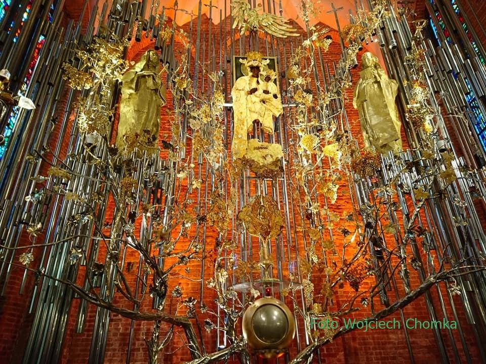

Godziny i wstęp · Opening hours
| poniedziałek–sobota · Mon–Sat | 10.00–18.30 |
|---|---|
| niedziela · Sunday | 13.30–18.30 |
Cegiełka na Bursztynowy Ołtarz
Wstępem jest dobrowolna cegiełka; dochód wspiera budowę ołtarza. Admission is a voluntary donation towards the Amber Altar.
| normalna · Normal | 6 zł |
|---|---|
| emeryci i studenci · Pensioners, students | 5 zł |
| dzieci · Children | 3 zł |
Do uzupełnienia: czy zwiedzanie jest wstrzymane w czasie Mszy i uroczystości.
Przewodnicy · Guides
| Przewodnik | Języki | Telefon |
|---|---|---|
| Bartek | polski, Deutsch | 888 616 686 |
| Aleksandra | polski, Deutsch | 604 800 101 |
| Piotr | polski | 781 354 215 |
Przed wejściem · Plan your visit
- Wycisz telefon i nie prowadź głośnych rozmów.Please switch your phone to silent and avoid loud conversations.
- Fotografuj i filmuj bez lampy błyskowej i reflektorów.Photos and filming are welcome, but without flash.
- Nie jedz i nie pij w świątyni; ubierz się stosownie.No eating or drinking. Please wear appropriate clothing.
Historia bazyliki
Kościół wyrósł z kaplicy gdańskich pokutnic i klasztoru brygidek. W odróżnieniu od większości średniowiecznych świątyń jego prezbiterium jest zwrócone na zachód.
- ok. 1350Na wschód od kościoła św. Katarzyny stoi kaplica pokutnic pw. św. Marii Magdaleny.
- 1374W drodze z Rzymu do Vadsteny w Gdańsku zatrzymuje się kondukt z relikwiami św. Brygidy — zaczyna się jej kult na Pomorzu.
- 1396Erygowanie klasztoru Najświętszego Zbawiciela (brygidek). Budowa kościoła trwa etapami do ok. 1512 roku.
- XV w.Powstaje kaplica św. Eryka, dziś zakrystia — ślad związków z Vadsteną i Uppsalą.
- 1587Pożar kościoła i części klasztoru; potem odbudowa według planów kościoła w Vadstenie.
- 1660Przy klasztorze powstaje parafia; kazania głoszone są po polsku i po niemiecku.
- 1817Prusy sekularyzują klasztor. Ostatnia siostra umiera w 1885 roku.
- 1840Parafia wojskowa; w latach 1849–1851 w miejscu klasztoru staje plebania.
- 1945Wojska sowieckie niszczą kościół — zostają mury i część sklepienia prezbiterium. Pożary w 1957 i 1969 roku.
- 1970Ruiny wracają do diecezji; w latach 1972–1974 kościół zostaje odbudowany.
- 1980Bliskość Stoczni Gdańskiej: w czasie strajków sierpniowych kościół staje się miejscem modlitwy robotników i „Solidarności”.
- 1983Ponowna konsekracja kościoła.
- 1992Jan Paweł II nadaje kościołowi tytuł bazyliki mniejszej.
Do uzupełnienia: źródła podają dwie daty erygowania klasztoru — 8 i 18 grudnia 1396; pełne teksty „Historia parafii” i „Historia świątyni” do przeniesienia.
Bursztynowy Ołtarz Ojczyzny

Nastawa sięga sklepienia prezbiterium: ma ponad 11 metrów wysokości i biegnie półkolem długości 12 metrów. Zaprojektowali ją prof. Stanisław Radwański, rektor gdańskiej ASP, i bursztynnik Mariusz Drapikowski; konstrukcję wykonali stoczniowcy.
W centrum jest obraz Matki Bożej Opiekunki Ludzi Pracy, namalowany przez ks. Franciszka Znanieckiego po masakrze grudniowej 1970 roku. Bursztynowe korony Maryi i Dzieciątka poświęcił w 2001 roku Jan Paweł II. Po bokach stoją figury św. Brygidy Szwedzkiej i św. Elżbiety Hesselblad, pod sklepieniem — orzeł z białego bursztynu, a u stóp ołtarza — brązowe postaci Jana Pawła II i kardynała Stefana Wyszyńskiego.
Nastawę oplatają winorośle w srebrnych i złoconych oprawach; w docelowym kształcie mają zająć 120 m². Trwa ostatni, III etap prac.
Święta Brygida
Brygida Szwedzka (1303–1373), mistyczka i założycielka Zakonu Najświętszego Zbawiciela, jest patronką Europy. Jej zawołanie brzmiało Amor meus crucifixus est — „Moja miłość jest ukrzyżowana”.
Teksty i modlitwy
- Życieod dworu królewskiego do „Mistyczki Północy”
- Posłannictwopowołanie i objawienia świętej
- Tajemnica szczęściarozważanie
- Piętnaście modlitwmodlitwy objawione św. Brygidzie
- Obietniceobietnice związane z odmawianiem modlitw
Do przeniesienia: pięć tekstów, razem ok. 36 tys. znaków — na razie linki prowadzą do obecnej strony parafii.
Kościoły rektorskie w parafii
| Kościół | Adres | Msze w niedzielę | W dni powszednie |
|---|---|---|---|
| św. Jakuba kapucyni | ul. Łagiewniki 63 | 8.00, 10.00, 11.30, 19.00 | 7.00, 18.00 |
| św. Józefa oblaci | ul. Elżbietańska 9/10 | 7.00, 8.30, 10.00, 11.30, 13.00, 18.00; w VII–VIII także 20.00 | 5.30, 6.00, 6.45, 7.30, 18.00 |
| św. Elżbiety pallotyni | ul. Elżbietańska 1 | 6.00, 7.30, 9.00, 10.30, 12.00, 16.00, 19.00 | 6.00, 7.00, 8.00, 9.00, 16.00, 19.00 |
| św. Katarzyny karmelici | ul. Profesorska 3 | 8.00, 10.00, 12.00, 13.00, 18.00 | 6.00, 18.00 |
Multimedia
- Kanał wideo parafiiYouTube: brygidagdansk
- Filmy o historii świątynipięć filmów na obecnej stronie parafii
Do zmiany: obecna „Panorama 3D” to plik QuickTime (panorama.mov), którego współczesne przeglądarki nie odtwarzają, a panorama VR360 z 2015 roku nie jest już dostępna w sieci. Warto zamówić nową panoramę wnętrza.